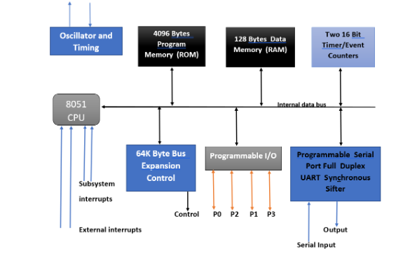

MICROCONTROLLER VS MICROPROCESSOR
Microprocessor (MPU): A standalone CPU on a single chip. It contains no onboard memory or peripherals. You must connect external RAM, ROM, and I/O ports to make a functional system.
Microcontroller (MCU): An entire computer-on-a-chip. It integrates the CPU, RAM, ROM, timers, and I/O pins all onto a single piece of silicon.
| Feature |
Microprocessor |
Microcontroller |
| Main Component |
CPU only |
CPU + RAM + ROM + Peripherals |
| Board Space |
Large (requires extra chips) |
Compact (single-chip solution) |
| Power Consumption |
High |
Very Low |
| Processing Speed |
Very Fast (GHz range) |
Slower (MHz range) |
| Core Application |
Laptops, Desktops, Servers |
Embedded systems, IoT, Appliances |
| System Cost |
High |
Low |
8051 Microcontroller Pin Configuration
8051 Microcontroller Pin Configuration
The 8051 microcontroller is packaged in a 40-pin Dual In-line Package (DIP) where 32 pins are dedicated to four 8-bit I/O ports, and the remaining 8 pins serve power, reset, clock, and memory control functions.

| Pin Number |
Pin Name |
Primary Function |
Alternate/Special Function |
| 1 – 8 |
P1.0 – P1.7 |
Port 1 (8-bit I/O) |
General purpose I/O (T2/T2EX in newer variants) |
| 9 |
RST |
Reset Input |
Active-HIGH system reset (minimum 2 machine cycles) |
| 10 |
P3.0 |
Port 3.0 |
RXD (Serial Asynchronous Input) |
| 11 |
P3.1 |
Port 3.1 |
TXD (Serial Asynchronous Output) |
| 12 |
P3.2 |
Port 3.2 |
INT0 (External Hardware Interrupt 0) |
| 13 |
P3.3 |
Port 3.3 |
INT1 (External Hardware Interrupt 1) |
| 14 |
P3.4 |
Port 3.4 |
T0 (Timer 0 External Clock Input) |
| 15 |
P3.5 |
Port 3.5 |
T1 (Timer 1 External Clock Input) |
| 16 |
P3.6 |
Port 3.6 |
WR (External Data Memory Write Signal) |
| 17 |
P3.7 |
Port 3.7 |
RD (External Data Memory Read Signal) |
| 18 |
XTAL2 |
Crystal 2 |
Output from the inverting oscillator amplifier |
| 19 |
XTAL1 |
Crystal 1 |
Input to the inverting oscillator amplifier |
| 20 |
GND |
Ground |
0V Reference level |
| 21 – 28 |
P2.0 – P2.7 |
Port 2 (8-bit I/O) |
A8 – A15 (Higher-order Address Bus) |
| 29 |
PSEN |
Program Store Enable |
Active-LOW read strobe for external program memory |
| 30 |
ALE / PROG |
Address Latch Enable |
De-multiplexes AD0–AD7 / Programming pulse input |
| 31 |
EA / VPP |
External Access |
Selects Internal/External ROM / Programming voltage |
| 32 – 39 |
P0.0 – P0.7 |
Port 0 (8-bit I/O) |
AD0 – AD7 (Multiplexed Address/Data Bus) |
| 40 |
VCC |
Power Supply |
+5V Main operating voltage |
8051 Microcontroller Architecture
8051 Microcontroller Architecture
The 8051 microcontroller features an 8-bit Harvard architecture. It was developed by Intel Corporation. This design integrates essential processing modules onto a single chip. It includes 4 KB program memory (ROM). It holds 128 bytes data memory (RAM). It features two 16-bit timers/counters. It has four 8-bit parallel I/O ports.

Central Processing Unit (CPU) & Core Registers
The CPU acts as the primary hardware processing core.
- Accumulator (Register A): Holds data for ALU arithmetic computations.
- B Register: Executes multiplication and division math operations.
- Program Status Word (PSW): Stores crucial arithmetic system flag states.
- Program Counter (PC): Houses the 16-bit next instruction address.
- Data Pointer (DPTR): Manages 16-bit external data memory mapping.
- Stack Pointer (SP): Points to temporary data storage stacks.
Memory Organization
The 8051 utilizes a modified memory architecture with split buses.
- Internal ROM: Stores 4 KB of system program code.
- External ROM: Expands program memory up to 64 KB.
- Internal RAM: Features 128 bytes for temporary tracking.
- Register Banks: Provides four banks with eight registers each.
- Bit-Addressable RAM: Allocates 16 bytes for individual bit manipulation.
- Scratchpad RAM: Stores general-purpose variables during execution loops.
- External RAM: Supports 64 KB data storage space extensions.
Integrated Peripherals & Buses
On-chip embedded modules manage external circuitry connections.
- I/O Ports: Contains four bidirectional 8-bit hardware channels.
- Port 0 and 2: Handles multiplexed external memory address mapping.
- Port 3: Performs alternative pin functions like hardware interrupts.
- Timers and Counters: Employs two 16-bit delay calculation blocks.
- Serial Port (UART): Manages full-duplex asynchronous data transmission pipelines.
- Interrupt Controller: Services five prioritized hardware vector interrupts.
- Oscillator Circuit: Requires crystal components for system clock sync.
- System Bus: Interconnects modules via 8-bit data lines.